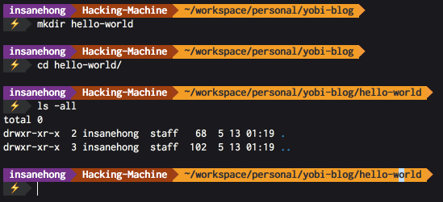
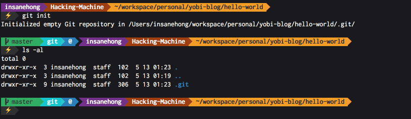
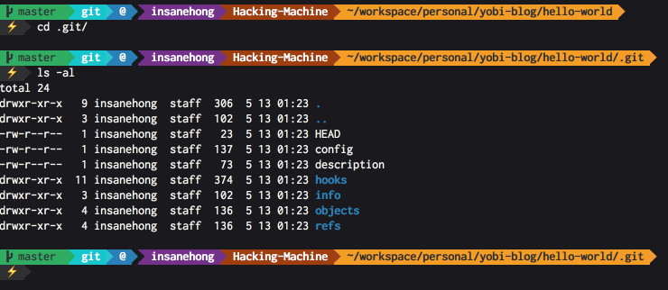

About Author

Insanehong
blog: http://insanehong.kr
twitter: @insanehong
github: insanehong.github.com
- NAVER Corporation, Front-End Engineer(2013~)
- Like Javascript, Dart, HTML5, CSS3,Responsive Web, Haroopress, Frends, Lean Startup, Open Source
- Hackrslab co-founder
- About me http://about.me/insanehong
About this Article
Date Released:
Monday, May 12 2014 6:47 PMLocal에 git 저장소 만들기
들어가기 앞서
이글은 Yobi 에서 새로운 프로젝트 시작하기 에서 만든 저장소를 기초로 진행할 예정이며
git CLI(Command Line Interface) 를 기반으로 git 의 기본적인 명령어를 익히는 것을 목적으로 하고 있다.
git 이 설치 되지 않았다면 다음의 글들을 참고하여 git 을 설치 후 config 설정을 하길 바란다.
- mac os : Git “Command Not Found” Error In Mountain Lion
- windows os : 윈도우 사용자를 위한 git client 설치
왜 GUI가 아닌 CLI 를 사용하는가?
윈도우 사용자에게는 CLI 가 참 낮설고 불편해 보일 것이다. 조금 과장해서 마우스 클릭만으로 냉장고가 집에 배달되는 세상에 키보드로 명령어를 입력해야 한다니 말이다.
하지만 git 을 GUI 로 다루는데는 한계가 있다. 여기서 말하는 한계라는 것이 git을 사용할수 없는 수준을 말하는 것은 아니다. 하지만 git 을 다루면서 생기는 다양한 상황에 본인이 원하는 행동을 git 에게 정확히 전달하기 위해서는 CLI 만한게 없다.
CLI에 익숙해지면 GUI 는 거의 손이 가지 않을 뿐더러 git 의 power full 한 옵션등을 마음껏 사용할수 있수 있으면서 그 속도 또한 GUI 에 비할바 아니다.
이는 문서 작업을 하면서 마우스만으로 하는 사람과 단축키를 사용하는 사람의 속도차이를 예를 들면 쉽게 이해 될 것이다.
ps. 비단 git 만이 아닌 현업에서 개발을 하다보면 GUI 보다는 CLI 에 익숙해 지는것이 몇배는 더 효율적이다 라는 것을 알수 있을 것이다. 고로 유닉스계열의 OS와 빨리 친해지기 바란다.
Set Up Git
windows 사용자의 경우 'msysgit' 을 실행 시켜 Command 를 입력하면 된다.
git 을 설치 했다면 git 을 사용하기 앞서 먼저 해줘야 몇가지 일이 있다. git의 기본 config 를 set up 하는 것이다.
방법은 간단하다 아래의 명령어를 실행 하면 된다.
$ git config --global user.name "your_name"
// git commit에 사용될 username
// git config --global user.name "insanehong"
$ git config --global user.email "your_email@example.com"
// git commit 에 사용될 email 주소
// git config --global user.email "insanehong@gmail.com"
git 설정을 반드시
--global옵션으로 지정하지 않아도 된다. 하지만 특별한 경우(개인 프로젝트와 회사프로젝트에서 사용되는 정보가 다른경우 등)가 아니라면 대부분 global 정보만으로도 큰 문제가 없기때문에 --global 로 설정하길 바란다. 개별 저장소마다 설정하는 것이 귀찮은 일이기도 하다.
config 설정이 끝났다면 제대로 설정이 되었는지 확인해 보도록 한다.
$ git config --list
// user.name=insanehong
// user.email=insanehong@gmail.com
git config 세팅이 끝났다면 이제 git 을 사용할 준비가 된것이다. 지금부터는 local 에 git 저장소를 만들어서 사용하면 된다.
local 에 git 저장소 만들기
이전 글에서 yobi를 사용하여 hello-world 라는 프로젝트를 만들었다. 하지만 코드 저장소가 비어있는 프로젝트 였기에 지금 부터 hello-world 프로젝트에서 사용할 코드 저장소를 만들어 보도록 하자.
git 을 이용해서 local 에 저장소를 만드는 방법은 다음의 2가지가 있다.
- git init
- git clone
git init 은 local 저장소를 시작으로 새로운 프로젝트를 시작하는 경우에 사용되며 비어있는 git 저장소가 생성이 된다.
git clone 의 경우 원격 저장소의 코드를 받아와서 local 에 git 저장소를 만드는 방법이다. 주로 이미 원격저장소에 올라가있는 코드를 받아오는 경우 사용되지만 원격저장소에 아무런 코드도 올라가 있지 않더라도 비어있는 저장소를 만들어준다.
git clone 은 이후에도 많이 다룰것이기 때문에 일단 git init 을 이용하는 방법으로 저장소를 만들어보도록 한다.
git init
git init 명령어는 현재 디렉토리를 git 저장소로 초기화 하는 명령어이다. 즉 프로젝트를 시작할 working directory 에서 이 명령어를 사용하면 된다.
$ mkdir hello-world
// hello-world 라는 디렉토리를 만든다.
$ cd hello-world
// hello-world 디렉토리로 이동
현재 상태에서 ls -al 명령어를 실행해보면 아무것도 없는 빈 디렉토리일 것이다.

yobi에서 프로젝트명을
hello-world로 만들었다고 해서 local 저장소를hello-world로 만들 필요는 없다. 하지만 해당 디렉토리명을 프로젝트 명과 일치 시키는 것이 여러 프로젝트를 관리하는데 용의 하기에 동일한 이름으로 지정하는 것을 추천한다.
자 이제 git init 명령어를 통해 이 디렉토리를 git 저장소로 초기화 해보도록 하자
$ git init
// 현재 디렉토리를 git 저장소로 초기화 시킨다.
$ ls -al
git init 명령 실행후 ls -al을 하면 .git 이라는 디렉토리가 생겼다는 것을 알수 있다.

.git 디렉토리는 git 저장소에서 가장 중요한 디렉토리이다. 정확히 말하면 git의 모든 것이 이 디렉토리에 저장된다 라고 할 수 있다.
심지어 이 디렉토리를 복사하는 것만으로도 git 저장소를 백업 할수 있다.
그 내부는 아직 완벽하게 이해할 필요는 없지만 간단히만 알아보도록 하자.
$ cd .git
$ ls -al
HEAD
config
description
hooks/
info/
objects/
refs/
버전에 따라 다르겠지만 .git 디렉토리는 git init 직후 위와 같은 구조를 가진다.

git 은 일종의 file db 이며 모든 정보는 file 로 관리 된다.
일단 기본적으로 HEAD, config 파일과 objects 디렉토리 에 대한 간단한 내용만 다뤄보자면
- config : 개별 저장소에 세팅한 git config 정보들이 저장된다. --global 옵션으로 지정한 config 외에 해당 저장소에서 별도로 지정하거나 override 한 정보가 이 파일에 저장된다.
- HEAD : HEAD 는 현재 checkout 한 branch 를 가리키는 포인터이다.
- Objects : Objects 디렉토리는 컨텐츠를 저장하는 database 이다. 즉 git 으로 관리하는 모든 정보들을 tree, blob, commit, tag object 로 관리한다.
사실 지금 단계에서는 git 의 내부 동작까지 자세히 알 필요는 없다. 지금 쓰는 이글 또한 git 을 주제로 했다기 보다 yobi 를 사용하면서 git 으로 프로젝트를 관리하는 법을 익히는 것이 주 목적이기 때문에 git inernal 에 대한 자세한 내용은 git 카테고리에서 자세히 다루도록 하겠다.
마무리
자 이제 local 에 git 저장소를 만드는 것을 완료 했다. 이제 할일은 열심히 코딩하는 것이다. 그리고 열심히 코딩한 내용을 git 을 통해 관리하는 것이다.
git 으로 실제 코드를 어떻게 관리하는가에 대해서는 다음 글에서 다루도록 하고 이번장은 git config 설정과 git 저장소를 만드는 과정, git 저장소를 만들면 일어나는 변화에 대해 알아보는 것으로 마무리 하도록 한다.